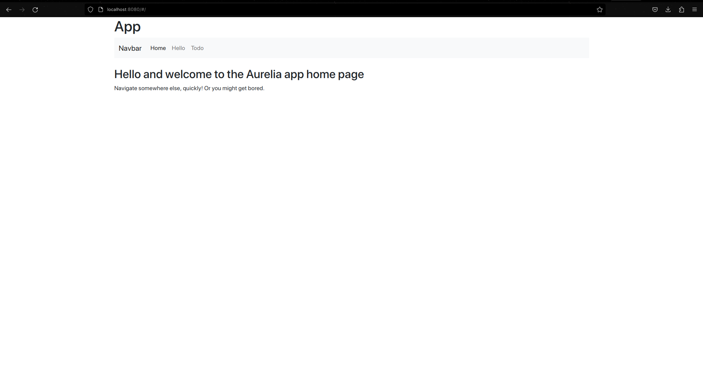
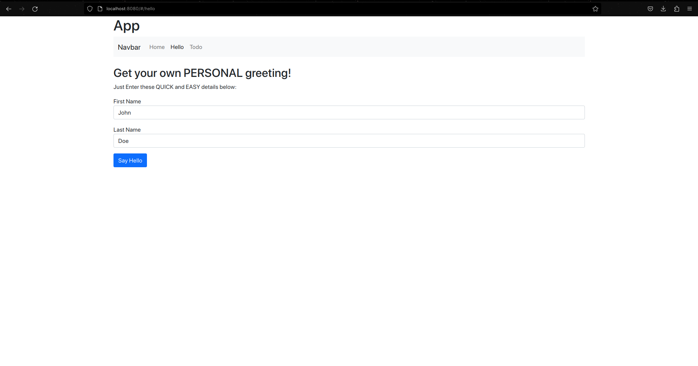
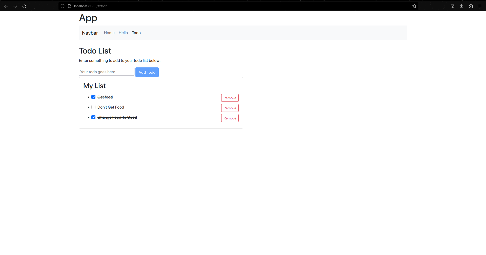

Aurelia
How it works
Aurelia offers both ESNext(Javascript) and Typescript support. It boasts a powerful, reactive system that is faster than other frameworks and their virtual DOMs (Aurelia, n.d.-b). Aurelia's views are wrapped in Web Components, this is good because it means that Aurelia can be used with other frameworks and libraries. It also means Aurelia will remain compatible with future web standards (Aurelia, n.d.-c).
The entry point in this framework is index.ejs, instead of the usual index.html. This is so it can specify the base URL from Webpack and insert the Aurelia bootstrapper script tag into the body of the page.
Figure 3
Aurelia Logo

(Aurelia, n.d.-a).
Strengths and Weaknesses
Strengths
-
If you don't generate components through the CLI, you have to manually add them to the app module, which can be tedious.
-
Each component is divided into 4 files, which can be confusing to keep track of.
Weaknesses
-
If you don't generate components through the CLI, you have to manually add them to the app module, which can be tedious.
-
Each component is divided into 4 files, which can be confusing to keep track of.
Example Web App
For Aurelia, I chose to use the JavaScript version. I followed a few of the tutorials on their website. The tutorials were clear and simple, and I was able to get the app working quickly. The app I made combined the to-do list and hello message with a navigation bar and view routing. The app is very simple but it was a good introduction to Aurelia.
Gallery
The Home Page
The "Hello" Message page
The To-do List Page
